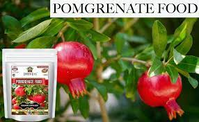

|  | Pomegranate, being an orchard crop, is a heavy feeder of nutrients. The recommended fertiliser dose is 600–700 gm of N, 200–250 gm of P2O5 and 200–250 gm of K2O per tree per year. In order to meet these nutritional needs, pomegranate growers should plan and follow the fertiliser management practices in a proper manner. |
| Watch this video for more information..!👈 |